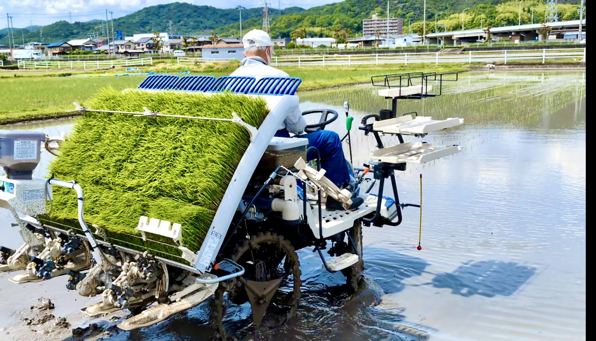

🌾 2025年度 上原田田植え完了報告

2025年5月28日 上原田田植えの様子
📅 実施日時
2025年5月28日（水）
午後に実施完了
📍 場所
八反田
上原田地区内
🌱 品種
キヌヒカリ
上原田の豊かな土壌で育つ
🚜 作業方法
機械植え
今年も安定した作業で
🎵 特別企画：田んぼライブ
花田町が産んだ歌姫、地元のローカルシンガーソングライターpinoが田んぼでライブを開催！
「稲の花」「ふかふか」など、心温まる楽曲で田植えを彩ります。
音楽と共に、稲の成長を見守り、
豊かな実りへの願いを込めて
豊かな実りへの願いを込めて
💚 バーチャル参加・応援歓迎
遠くからでも、心はひとつ。田植えを見守り、応援してください。
参加方法：
- 🎵 歌、舞、笛、太鼓など表現での応援
- 🙏 稲の成長への祈り
- 👀 当日の見学・見守り
- 💬 SNSでの応援メッセージ
「植えた苗がちゃんと根付きますように
無事に夏を乗り切り、秋の収穫を迎えられますように」
〜 温かく、やさしい気持ちが水を通じて稲に伝わります 〜
無事に夏を乗り切り、秋の収穫を迎えられますように」
〜 温かく、やさしい気持ちが水を通じて稲に伝わります 〜
📸 リアルタイム更新中
田植えの準備から当日まで、Instagram で最新情報をお届けします
@hirao_banshu をフォロー🌱 これからの稲の冒険
植えられた苗たちは、これから長い成長の旅を始めます。
- 6月〜7月：根張りと分げつ（株分かれ）の時期
- 8月：暑い夏を乗り越え、穂が出始める
- 9月：台風シーズンを無事に通過
- 10月：黄金色に実った稲穂の収穫
みんなの祈りと温かい見守りが、
きっと稲たちの力になります
きっと稲たちの力になります
📝 成長を見守る
稲の成長過程は以下のページで定期的に更新予定です：